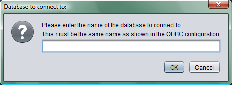

If you want to store the data from JavaNews in another database you can change this within the application. By selecting Configuration > Set Database from the main window you can enter the name of the new database. This name must be the data source name you have given the database connection through ODBC.

For more information
If you require more information about how to configure a data source with ODBC, there is a page here.